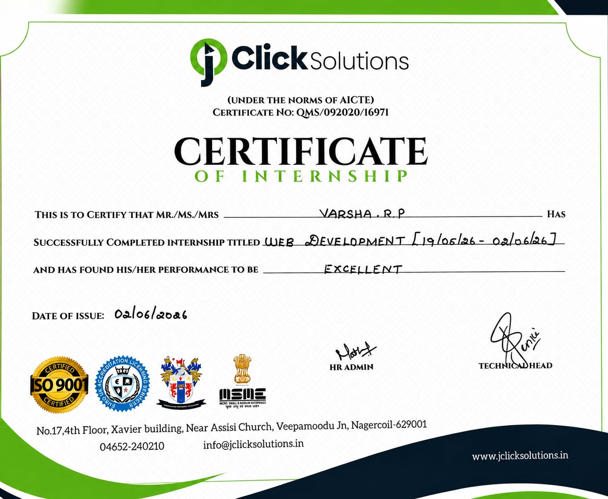

Hi, I'm Varsha RP
Full Stack Developer
with a passion for creating innovative and user-friendly web applications.
with a passion for creating innovative and user-friendly web applications.
I'm Varsha RP, a passionate student from Computer Science and Business System Department at KIT Coimbatore. I enjoy exploring how technology can slove realworld problems and create meaningful solution. My interests include Java, Web Development, Database and Software development. My goal is grow as a skilled software professional and contribute to innovative projects that make a positive impact on society.

Internship Certificate
MongoDB Certification
Overview: A full-stack, team-built web platform that streamlines the campus placement workflow with an AI-assisted shortlisting engine, role-based dashboards, and end-to-end application tracking. The platform centralizes student profiles, company drives, eligibility checks, interview scheduling, and analytics into a single, secure interface.
Key Features: Student profile creation with resume and certificate uploads, skill tagging, advanced search and filters for recruiters, automated candidate shortlisting using keyword and skill-score matching, interview scheduling and automated email notifications, and a comprehensive analytics dashboard showing placement trends, top skills, and conversion rates.
My Role: Frontend lead — I designed and implemented responsive UI components, built the profile and application flows, integrated REST APIs, and implemented client-side validation and accessibility improvements. I also collaborated on the matching algorithm design and helped test the candidate scoring heuristics.
Tech Stack: React (or Vanilla JS), Node.js, Express, MongoDB, basic ML models with TensorFlow.js for on-device scoring, and hosted on cloud platforms for scalability.
Impact: Automates repetitive eligibility checks, reduces manual shortlisting time, and provides placement officers with actionable insights to improve placement outcomes.
Overview: A responsive portfolio site to showcase projects, skills, certifications, and contact details. The site prioritizes performance, accessibility, and a clear information hierarchy so potential employers can quickly review my work.
Key Features: Project showcase with detailed case studies and screenshots, downloadable resume (PDF), contact links (email and LinkedIn), minimal and accessible navigation, and subtle animations to improve user engagement without harming performance.
My Role: Sole developer — responsible for layout, responsive CSS (Flexbox/Grid), semantic HTML, and JavaScript for interactive behavior (smooth scrolling, reveal animations). I also optimized images and improved accessibility for screen readers.
Tech Stack: HTML5, CSS3, JavaScript, and ScrollReveal for scroll-based animations.
Notes: This portfolio is itself a demonstration of design choices, code quality, and deployable static sites best practices.
Overview: A clean, lightweight todo application focused on usability and offline friendliness. Users can create, edit, delete, and mark tasks as complete with persistent storage and simple filtering.
Key Features: Task creation and editing, persistent localStorage storage, task categorization and priority flags, filters (all/active/completed), keyboard shortcuts, and responsive layout for mobile-first usage.
My Role: Implemented the core task management logic, local persistence, responsive UI, and enhancements for better UX (animations, confirmations, and keyboard support).
Tech Stack: HTML, CSS, Vanilla JavaScript. Future improvements planned include backend sync, user accounts, and collaborative task lists.